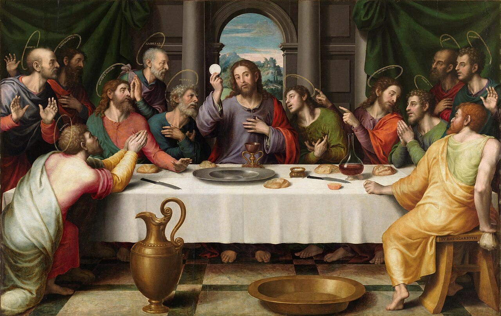
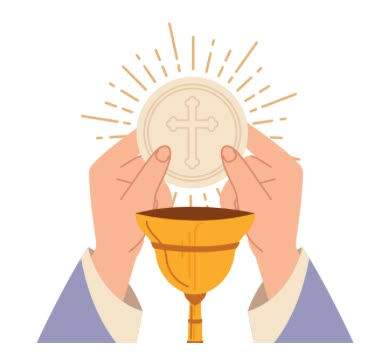
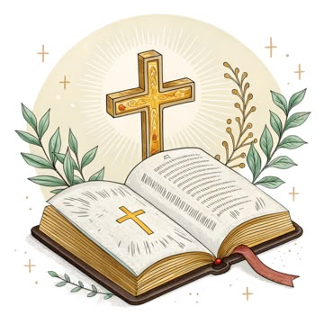
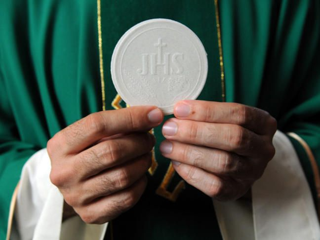

The Eucharist is the third, final and most important out of the sacraments of Christian Initiation. It is the Real Presence of our Lord and Savior, Jesus Christ. He is truly, really, and substantially present in the Eucharist, not symbolically, metaphorically or as a mere memory. It is no longer bread or wine, it is Jesus.
As the "sacrament of the sacraments" (Saint Thomas Aquinas, the Summa Theologiae), the Eucharist is unique. We must be baptized, confirmed and in state of grace. If you are in mortal sin, you can not receive it. Confessing to a priest is necessary in order to be restored in a state of grace. Approaching the altar with an unconfessed mortal sin is considered a sacrilege and it dishonors the Body, Blood, Soul, and Divinity of Jesus Christ.

The Eucharist, the blessed sacrament, is deeply rooted in Sacred Scripture. At the Last Supper, Jesus instituted this sacrament: "This is my body which is given for you. Do this in remembrance of me" (Luke 22:19).
Furthermore, in the Gospel of John, Jesus makes it clear that His flesh is true food: "I am the living bread which came down from heaven; if any one eats of this bread, he will live for ever; and the bread which I shall give for the life of the world is my flesh" (John 6:51).
The Apostle Saint Paul also confirms our communion with Christ in this sacrament: "The cup of blessing which we bless, is it not a participation in the blood of Christ? The bread which we break, is it not a participation in the body of Christ?" (1 Corinthians 10:16).

When we receive the Eucharist properly, after being baptized, confirmed and in a state of grace, profound things happen to our souls:
